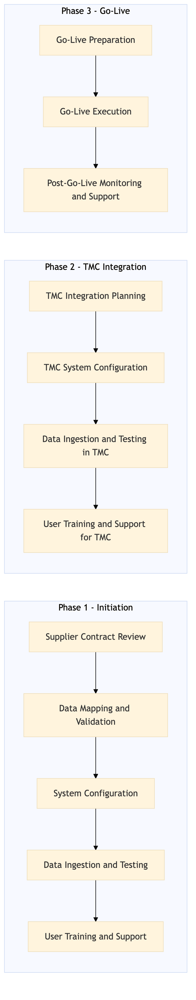

This process document outlines the integration of rail and ground transport content between OTA systems managed by Expedia Group and TMC systems managed by Amex GBT / Concur.
| Trigger | Initiation of a new rail or ground transport supplier contract |
| Outcome | Successful integration of rail and ground transport content across all relevant systems, ensuring seamless availability and booking capabilities for travelers. |
| Systems | Expedia Open World Partner Central Amadeus NDC Sabre GDS Travelport EVC One Key TravelAds AWS SageMaker Snowflake Kafka Salesforce Tableau Concur T2 Concur Expense Amex GBT Neo/Complete S/4HANA International SOS Cvent Amex Corporate Card VCN Analytics Cloud Workday |

Click to enlarge
| Step | Name & Pain Point | Role | System | Input | Output | KPI | Flags |
|---|---|---|---|---|---|---|---|
| 1.1 | Supplier Contract Review Delays in contract review process | OTA Supplier Relations Manager | Partner Central | New supplier contract details | Approved contract terms and conditions | Contract approval within 3 business days | ◆ Decision |
| 1.2 | Data Mapping and Validation Inconsistent data formats | Integration Specialist | AWS SageMaker, Snowflake | Approved contract terms and conditions | Mapped data fields and validation rules | Data mapping completed within 5 business days | ⚠ Exception |
| 1.3 | System Configuration Technical compatibility issues | IT Specialist | Expedia Open World, Amadeus NDC, Sabre GDS, Travelport, EVC, One Key, TravelAds | Mapped data fields and validation rules | Configured systems for new supplier integration | System configuration completed within 7 business days | ⚠ Exception |
| 1.4 | Data Ingestion and Testing Data quality issues | Integration Specialist | Kafka, Snowflake | Configured systems for new supplier integration | Tested data ingestion and validation | Data ingestion testing completed within 10 business days | ◆ Decision |
| 1.5 | User Training and Support Resistance to change | Customer Success Manager | Salesforce, Tableau | Tested data ingestion and validation | Trained users on new supplier integration | User training completed within 2 business days | ⚠ Exception |
| 1.6 | TMC Integration Planning Complexity in TMC system integrations | TMC Integration Specialist | Concur T2, Concur Expense, Amex GBT Neo/Complete, S/4HANA | Approved contract terms and conditions | Integration plan for TMC systems | TMC integration planning completed within 5 business days | ⚠ Exception |
| 1.7 | TMC System Configuration Technical compatibility issues | IT Specialist | Concur T2, Concur Expense, Amex GBT Neo/Complete, S/4HANA | Integration plan for TMC systems | Configured TMC systems for new supplier integration | TMC system configuration completed within 7 business days | ⚠ Exception |
| 1.8 | Data Ingestion and Testing in TMC Data quality issues | Integration Specialist | Kafka, Snowflake | Configured TMC systems for new supplier integration | Tested data ingestion and validation in TMC systems | TMC data ingestion testing completed within 10 business days | ◆ Decision |
| 1.9 | User Training and Support for TMC Resistance to change | Customer Success Manager | Salesforce, Tableau | Tested data ingestion and validation in TMC systems | Trained users on new supplier integration in TMC systems | TMC user training completed within 2 business days | ⚠ Exception |
| 1.10 | Go-Live Preparation Last-minute issues | Project Manager | All systems involved | Completed integration and testing in all systems | Prepared for go-live with final checks | Go-live preparation completed within 1 business day | ◆ Decision |
| 1.11 | Go-Live Execution System outages or failures | Project Manager | All systems involved | Prepared for go-live with final checks | New supplier content live in all systems | Go-live executed without major issues within 1 business day | ⚠ Exception |
| 1.12 | Post-Go-Live Monitoring and Support User complaints or technical problems | Support Team | All systems involved | New supplier content live in all systems | Monitored system performance and provided support to users | No major issues reported within 1 week post-go-live | ⚠ Exception |